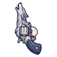
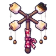

ม้ากลวง
มอนธาตุมืด Lv 34–42
เจอที่
| แมพ | โซน | Lv | ภูมิภาค |
|---|---|---|---|
| ถนนผู้อพยพ | 35–42 | ดินแดนเหนือ | |
| ถนนผู้อพยพ | ขบวนเกวียนล่ม | 39–42 | ดินแดนเหนือ |
| ค่ายผู้อพยพร้าง | 34–42 | ดินแดนเหนือ | |
| สะพานไม้ข้ามแม่น้ำ | 34–42 | ดินแดนเหนือ | |
| ทางเกวียนในหุบ | 34–42 | ดินแดนเหนือ | |
| ทางเกวียนในหุบ | ขบวนเกวียนหัก | 40–42 | ดินแดนเหนือ |
| หอรากมืด (Dark Root) | หัวใจต้นไม้มืด | 90–99 |
ค่าสถานะตามเลเวล
| Lv | HP | ATK | DEF | MDEF | EXP | Job |
|---|---|---|---|---|---|---|
| 34 | 4,980 | 66–99 | 14 | 5 | 46 | 35 |
| 38 | 6,758 | 79–119 | 15 | 6 | 51 | 38 |
| 42 | 8,935 | 91–136 | 17 | 6 | 55 | 41 |
ตีด้วยธาตุไหนดี
แรงขึ้น: ศักดิ์สิทธิ์ ×1.25
เบาลง: วิญญาณ ×0.75 พิษ ×0.5 มืด ×0 อมตะ ×0
วัตถุดิบที่ดรอป
| ของ | โอกาส | |
|---|---|---|
| เกือกม้ากลวงขึ้นสนิม | 55% | 1 ชิ้น (15% ได้ 2) |
อุปกรณ์ที่ดรอป (4)
| ของ | โอกาส |
|---|---|
| 0.25% | |
| 0.25% | |
 ปืนพกคู่หมาป่าเงาจันทร์ | 0.12% |
 ไม้เชิดหุ่นมาร์ชเมลโล่ | 0.12% |
สกิล
ทุบพื้น (Lv 25+) · ทุบพื้น (Lv 60+) · ดึง (Lv 60+)